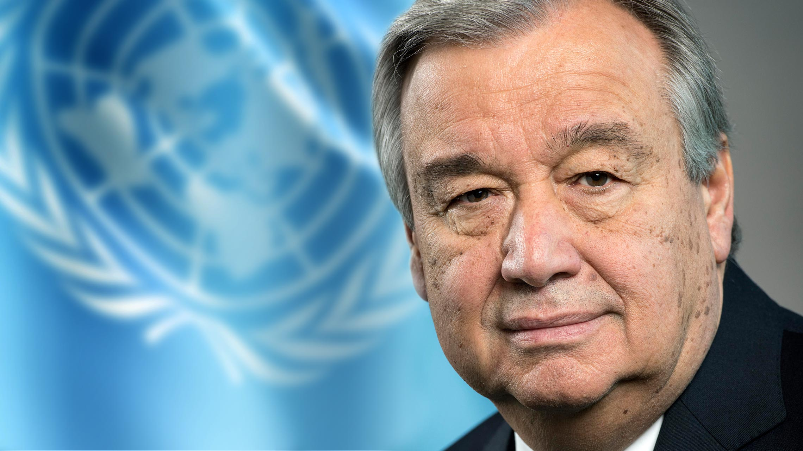

Humanity is an inextricable part of the rich tapestry of life that makes up our world’s biological
diversity. All human civilizations have been and continue to be built on the use of wild and cultivated
species of flora and fauna, from the food we eat to the air we breathe.
However, it seems that humanity has forgotten just how much we need nature for our survival and
well-being. As our population and our needs continue to grow, we keep exploiting natural resources -
including wild plants and animals and their habitats - in an unsustainable manner.
In its 2019 Global Assessment, the Intergovernmental Panel for Biodiversity and Ecosystem Services
(IPBES) highlighted how the current global rate of species extinction is rampant and accelerating - tens
to hundreds of times higher than before humans inhabited the planet.
By overexploiting wildlife, habitats and ecosystems, humanity is endangering both itself and the survival
of countless species of wild plants and animals. Today, close to a quarter of all species on the planet
are in danger of becoming extinct in the next decades.
On this World Wildlife Day, let us remind ourselves of our duty to preserve and sustainably use the vast
variety of life on the planet. Let us push for a more caring, thoughtful and sustainable relationship
with nature. A world of thriving biodiversity provides the foundation we need to achieve our Sustainable
Development Goals of a world of dignity and opportunity for all people on a healthy planet.